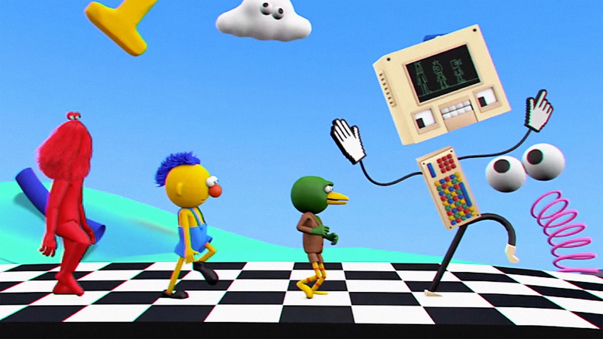
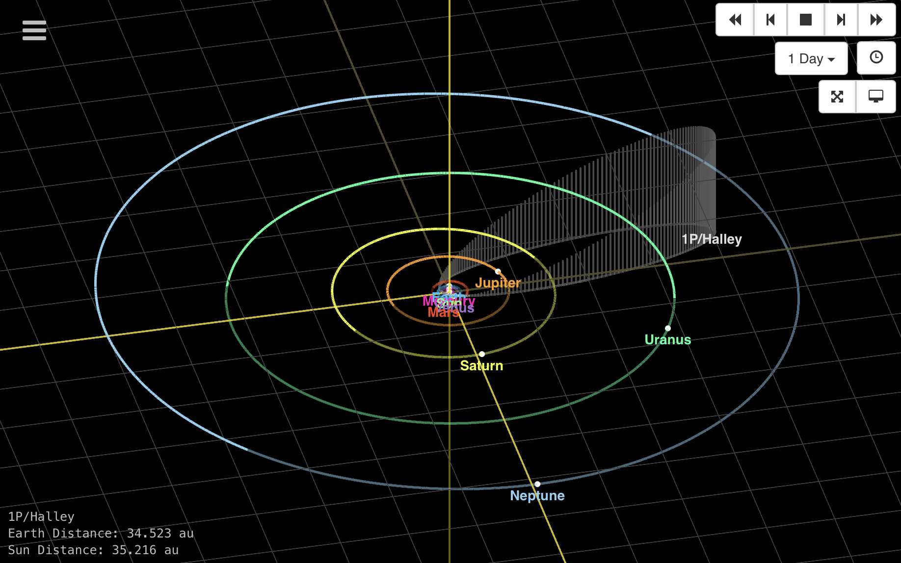
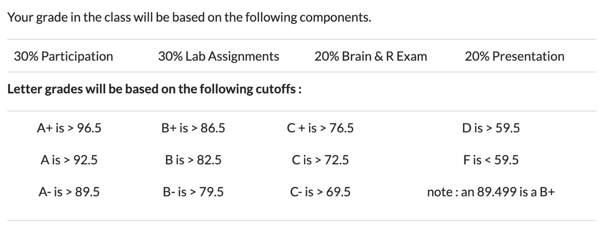
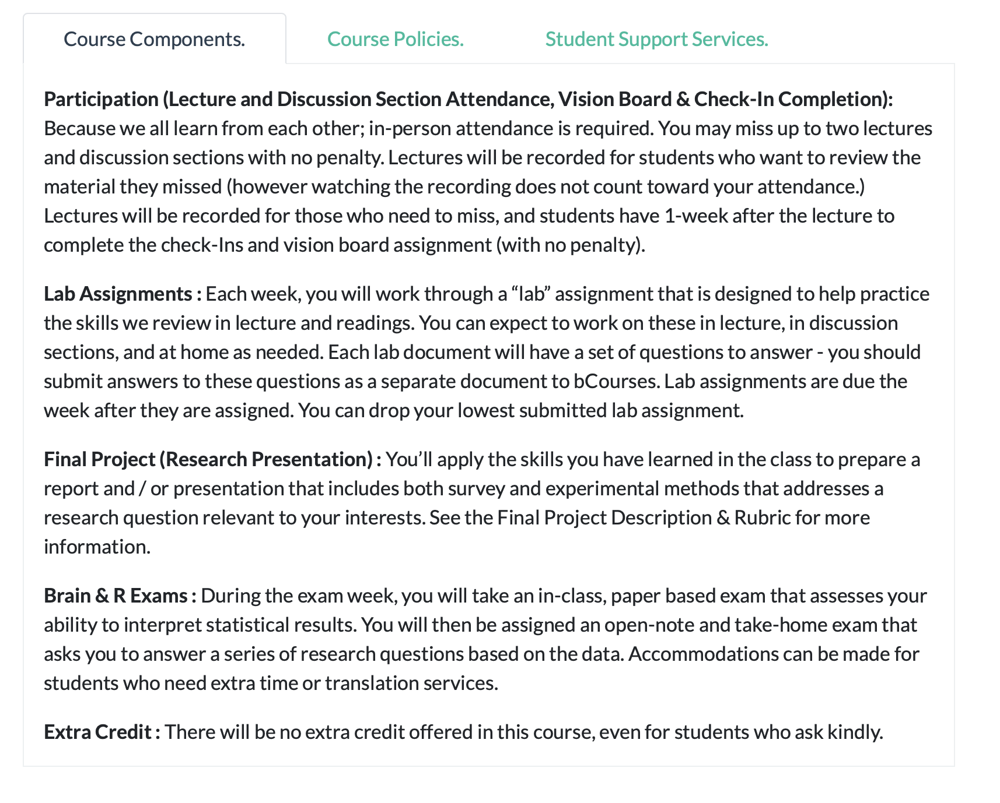
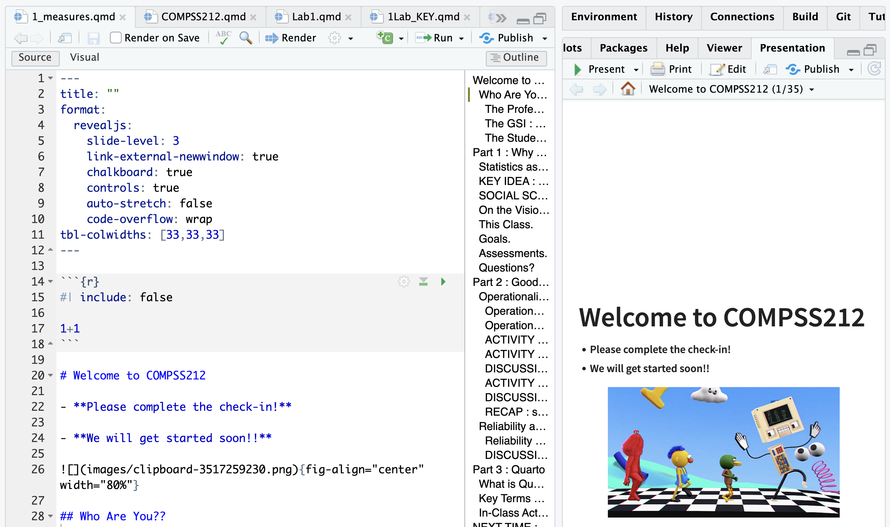
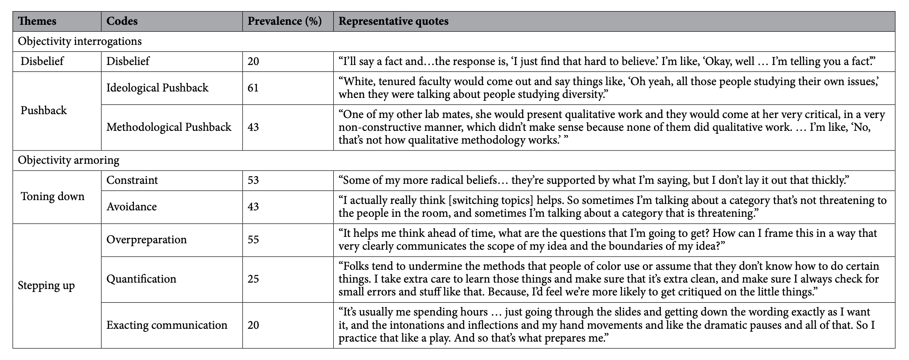
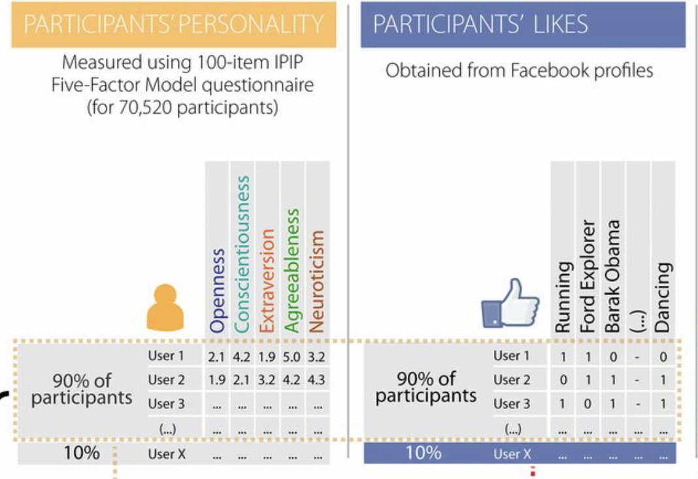
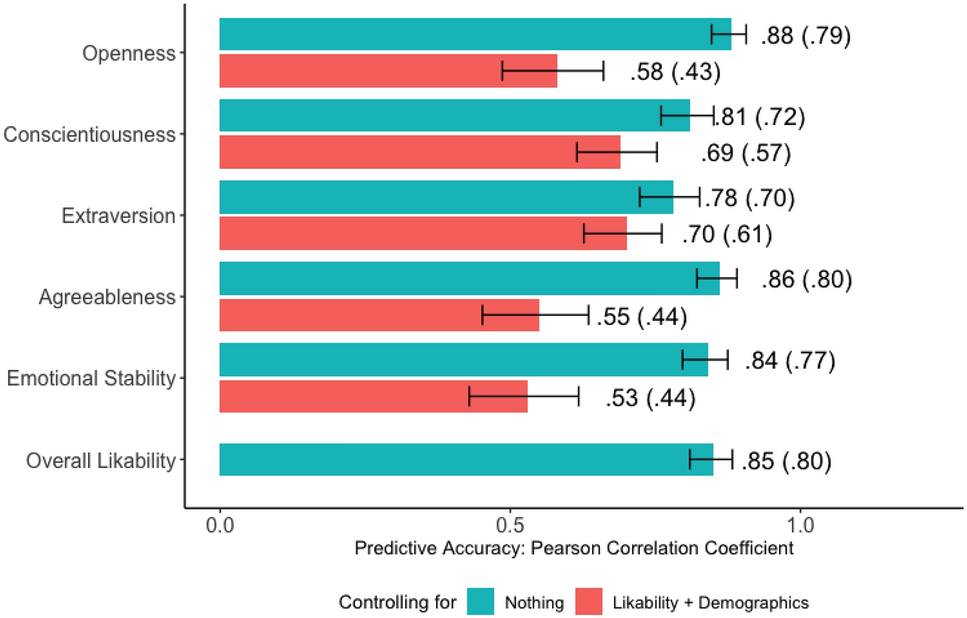

Welcome to COMPSS212
Please complete the check-in!
We will get started soon!!

Who Are You??
The Professor : Arman Catterson
who : Arman…Professor…Professor Catterson…Dr. Catterson
where : from Texas to Berkeley to Google (briefly) to teaching statistics at the graduate and undergraduate level in the Bay Area <3
what else : parenting and bicycles and dnd and exploring the bay area (and beyond).
The GSI : Yi-Ke!
- Yi-Ke Facts Go Here.
The Students.
Your voice is needed.
in the classroom! we learn from each other.
clap once if you are here.
sound you made when alarm went off this morning?
-
What’s your preferred name (and pronouns)
Where’s home?
What do you want to do with computational social science?
Part 1 : Why Applied Statistics I?
Why is this class required?
Why is this degree or career path needed?????!?
Statistics as a Language…
| …to describe | …to predict | …to control |
|---|---|---|
 |
 |
KEY IDEA : this is hard and errors happen.
| …error in description | …error in prediction | …error in controlling outcomes |
|---|---|---|
 |
On the Vision Board :
what are the variables you are trying to DESCRIBE with your interest?
how will you use this knowledge to make PREDICTIONS?
how might you use this knowledge to CONTROL OUTCOMES?
what are some places that ERROR might be introduced into your work?
This Class.
Goals.
- Deepen statistics knowledge so you can conduct and critique analyses.
- Practice doing “good science” in class and discussion section.
- Keep it Chill. Y’all are juggling a lot; better to learn a few things well than many things poorly.
Assessments.
The class is structured to support three authentic skills :
Brain Exam : talk and / or write about data without using a computer
R Exam : take a novel dataset and analyze it to answer a question
Presentation : share some analyses you did on data you care about with the class

Questions?

Part 2 : Good Data
Operationalization (an Eight Syllable Word)
- A fancy definition (like a rich doctor).
- Technical and precise (like a doctor who operates).
- A process (an operation).

Operationalization in Real-Life
Operationalization of “Cognitive Exam”

ACTIVITY : Count the Interruptions.
Count the Interruptions : tinyurl.com/macssinterrupt
- Count the number of interruptions in the video (which professor will play soon).
- Submit your answer, then wait for the letter of the day.
ACTIVITY : Count the Interruptions.
DISCUSSION : Operationalization
How was watching the video?
How many INTERRUPTIONS did you count?
How did you OPERATIONALIZE an INTERRUPTION?
ACTIVITY : Count the Interruptions Again.
DISCUSSION : How would the data change?
- What differences between our counts at time 1 and time 2 would we expect there to be?
- What patterns in the data would we expect there to be?
- IN R : what analyses would we do to test these predictions?
RECAP : statistics describe (and predict)
mean : the expected value; value that is closest to all the data points.
standard deviation : how much the average individual differs from the mean
bivariate regression terms :
intercept : the predicted value of Y when all X values are zero.
slope : how changes in X are related to changes in Y
$ R^2 $ : how well the IV(s) predict the DV; reduction in error when using the model (vs. the mean)
Reliability and Validity

Reliability and Validity (Specific Terms)
| Term | Example (Bathroom Scale) | Example (Interruption Data) |
| face validity : does our measure or result look like what it should look like? | data are numbers; range from 0 to 100s | |
| convergent validity : is our measure similar to related concepts? | weight should increase with height…pant size. | |
| discriminant validity : is our measure different from unrelated concepts? | weight should be unrelated to mouth position. | |
| test-retest reliability : do we get the same result if we take multiple measures? | step on the scale multiple times; get same result. | |
| inter-rater reliability : would another observer (or tool) make the same measurements? | step on multiple scales; get same answer. |
DISCUSSION : examples of these terms in social science research?
| Term | Example (Social Media “Likes”) | Example (Your Variable?) |
| face validity : does our measure or result look like what it should look like? | ||
| convergent validity : is our measure similar to related concepts? | ||
| discriminant validity : is our measure different from unrelated concepts? | ||
| test-retest reliability : do we get the same result if we take multiple measures? | ||
| inter-rater reliability : would another observer (or tool) make the same measurements? |
Part 3 : Quarto
What is Quarto?
- Fancy R Markdown: An open-source publishing system supporting R, Python, Julia, and Observable.
- “Streamlined” Authoring: Seamlessly weaves narrative text, executable code, and rendered output into a single document that can export into HTML, PDF, Word, website, slide deck…
- Reproducible Workflows: Ensures your analysis and reporting stay updated automatically as data changes.
- Source of Headache and Frustration: There will be troubleshooting. We will figure it out :)
Key Terms & Core Concepts
- YAML Header: Configuration section at the top (
--- ... ---) defining document metadata, format, and themes. - Code Chunks: Blocks of executable code (
```{r} ... ```) controlled by#|options (e.g.,#| echo: false). - Markdown Syntax: Simple plain-text formatting for headers (
##), lists (*), and text styles (**bold**). - Rendering: The conversion process (
quarto render) that executes code and generates the final output file.

In-Class Activity (10 Minutes)
- Create Document: Open RStudio and go to File > New File > Quarto Document… (Save as
week1.qmd). - Insert Code: Add an R chunk containing your code from the interruption activity.
- Hide Code: Insert
#| echo: falseon the first line inside the chunk to hide the code and display only the output. - Render: Click the Render button (or press
Ctrl/Cmd + Shift + K) to build your HTML presentation slide.
NEXT TIME : Is It Possible to Be Objective?
The Replication Crisis : In Social Sciences
The Replication Crisis : In Other Sciences Too
Optional Reading : Objectivity Interrogations

SOCIAL SCIENCE : REAL (TM) SCIENCE

